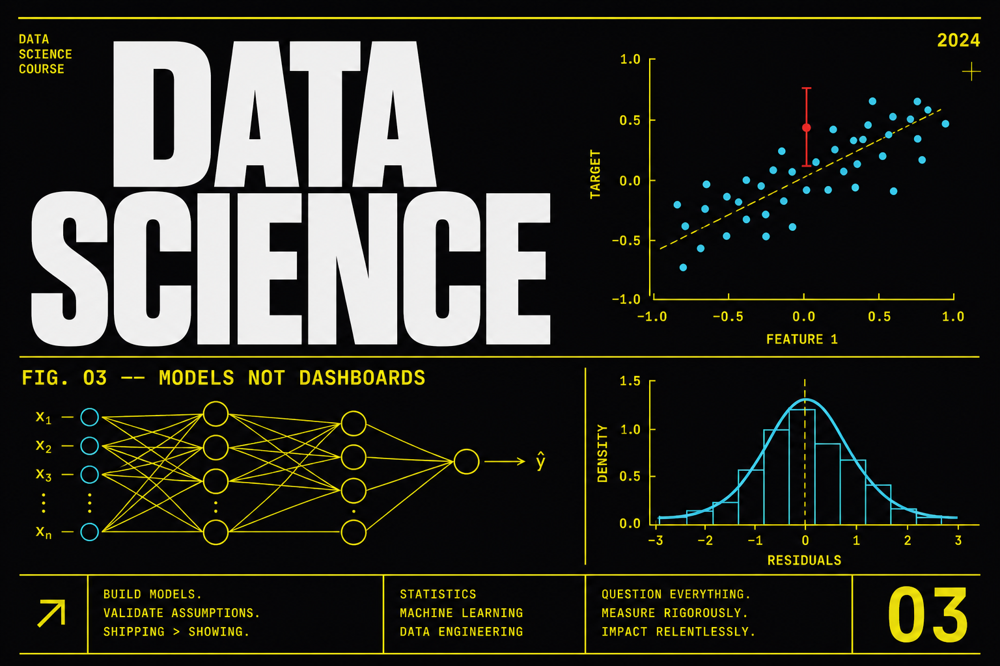

Data Science Gen AI
A 6-month live sequence from Python and SQL into machine learning, then enough deep learning and LLM/RAG to talk to a hiring manager without pretending this is a GenAI specialization. Visualization is Matplotlib and Seaborn. Power BI and Tableau are not on this syllabus — those live on Data Analytics with AI.

Program fee
One-time payment
Limited-time discount: course fee ₹65,000 minus ₹10,000; you pay ₹55,000.
Payment options
- Flat ₹10,000 OFF — Pay ₹55,000 all-inclusive. No hidden charges.
- EMI options available
What you learn
Who it is for
Career support
Course Curriculum
Module 1: Python for Data Science
Python, SQL, and statistics
Six months only works if the language is a habit. This module is Python you will reuse in every later notebook — not a tour of trivia.
Syntax that sticks
- Types, control flow, functions, and modules you will actually import
- List/dict comprehensions without turning the file into a puzzle
- Errors: read a traceback before you paste it into a chatbot
Data structures in practice
- When a list is wrong and a dict or set is right
- Dataclasses / named tuples for experiment configs
- Paths, JSON, and CSV without hard-coded Windows surprises
Jupyter workflows
- Kernel, restart, run-all — the only honest notebook
- Markdown cells that state the question
- Moving a useful cell into a .py helper before it grows mold
Engineering hygiene
- venv or conda, requirements.txt, and why ‘it works on my machine’ is not a result
- Git: commits that say what changed in the experiment
- A tiny test for a cleaning function
You leave with a repo layout: notebook + helper module + requirements, runnable from a cold start.
Module 2: NumPy, Pandas, and SQL
Python, SQL, and statistics
Modeling tables are arrays and joins. You will wrangle in Pandas, think in NumPy shapes, and pull training tables with SQL — still no Power BI on this program.
NumPy
- Shapes, broadcasting, and the bugs that look like ‘wrong accuracy’
- Vectorize a loop you wrote in Module 1
- Random seeds you can replay
Pandas wrangling
- Groupby, merge, resample, and window-ish transforms
- Leakage: a feature that includes the future
- Train/valid split as a time cut when the data has a clock
SQL for modeling tables
- Joins that produce one row per entity
- Aggregations that become features
- Export to a file the model code can read without a GUI
Handoff to stats
- A tidy table, a data dictionary, and known missingness
- No dashboard tool here — plots come next in Matplotlib/Seaborn
- A short note: grain, keys, leakage risks
You leave with a feature table from SQL + Pandas, documented grain, and a leakage warning you wrote yourself.
Module 3: Statistics and EDA
Python, SQL, and statistics
Statistics is how you stop lying to yourself with a lucky chart. Visualization on this program is Matplotlib and Seaborn — not Power BI.
Probability you will use
- Distributions that show up in product data
- Sampling vs population, and why n=12 is not a launch
- Independence assumptions you will violate and then name
Hypothesis testing
- A test that matches the design (not ‘p < 0.05’ as a personality)
- Confidence intervals as the sentence you tell a PM
- Multiple comparisons: the dashboard that tests everything
Feature engineering
- Encodings, bins, and interactions you can justify
- Scaling and when trees do not care
- Target leakage checks before you fit anything
Plots in Python
- Matplotlib/Seaborn: univariate, bivariate, residual-style views
- A figure that states a claim in the title
- Why this track does not open Power BI — that lives on Analytics
You leave with an EDA report: tests, two Python figures, and a feature list with leakage notes.
Module 4: Core Machine Learning
Machine learning
Classical ML is still the interview and still the baseline. You will fit, evaluate, and pipeline models in scikit-learn — then beat a dumb baseline on purpose.
From regression to boosting
- Linear models you can interpret
- Trees and random forests
- Gradient boosting (XGBoost-class) as the strong baseline
Evaluation
- The metric that matches the cost of being wrong
- Calibration, confusion matrices, ranking metrics
- Cross-validation that respects time or groups
Scikit-learn pipelines
- Preprocess + model in one object
- ColumnTransformer so production code matches the notebook
- Serialize and reload without ‘it worked yesterday’
Error analysis
- Slice the errors; do not only quote AUC
- A simple model that is allowed to win
- Write the limitation before the career call
You leave with a pipeline, a metric that matches the decision, and an error slice — not just a leaderboard number.
Module 5: Deep learning and NLP
Machine learning
Enough neural nets and text models to talk to a hiring manager without faking a research paper. This is still data science, not Gen AI Specialization.
Neural net foundations
- Tensors, a training loop, overfit a tiny set on purpose
- Regularization and why loss going down is not ‘done’
- GPU vs CPU: what you actually need for this module
NLP essentials
- Tokenization, embeddings, a classical text baseline
- A transformer API call vs training from scratch — know the difference
- Failure modes: toxicity, domain shift, empty strings
Honest scope
- You will not finish a new LLM pretrain
- You will be able to explain attention at a whiteboard level
- If you want LoRA and serving depth, that is Gen AI Specialization
A small experiment
- Classify or extract on a dataset you understand
- Compare to the Module 4 baseline
- Log hyperparameters like an adult
You leave with one DL/NLP experiment compared to a classical baseline, and a sentence on when not to use a net.
Module 6: LLM and RAG intro
Applied GenAI for scientists
A grounded intro so you can retrieve over your own notes and wrap it in a script. This is not a BI visualizer track and not the full developer or specialization slab.
Model APIs from notebooks
- Chat vs embed endpoints
- Tokens, cost, and retries
- Structured outputs for extraction jobs
Simple retrieval
- Chunk your own docs, embed, retrieve, cite
- When RAG is worse than grep
- A tiny eval: did the answer use the retrieved chunk?
A thin wrap
- FastAPI or a CLI around the notebook
- Secrets not in git
- Still no Power BI — charts stay in Python
Where to go next
- Gen AI for Developers if you want product RAG
- Gen AI Specialization if you want fine-tunes
- LLMOps if your job is serving and eval gates
You leave with a small RAG-over-docs demo and a written limit: what it cannot answer.
Frequently asked questions
Do you teach Power BI or Tableau?
No. Charts here are Matplotlib and Seaborn. Power BI lives only on Data Analytics with AI.
What is the fee and duration?
₹55,000 after the published ₹10,000 off from ₹65,000. Duration is 6 months, live.
Is this the same as Gen AI Specialization?
No. This is data science (stats + ML) with an LLM/RAG intro. Gen AI Specialization goes deeper on transformers, fine-tuning, and serving.
Ready to start?
Talk to an advisor about this program — 15 minutes, no sales pitch.